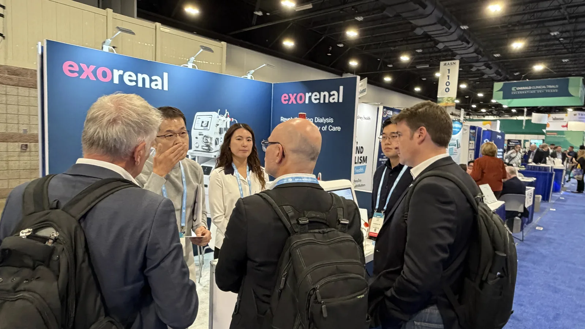
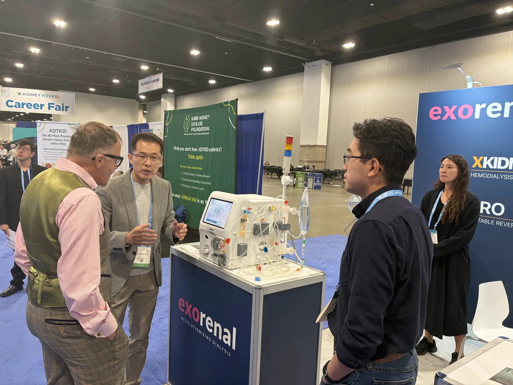
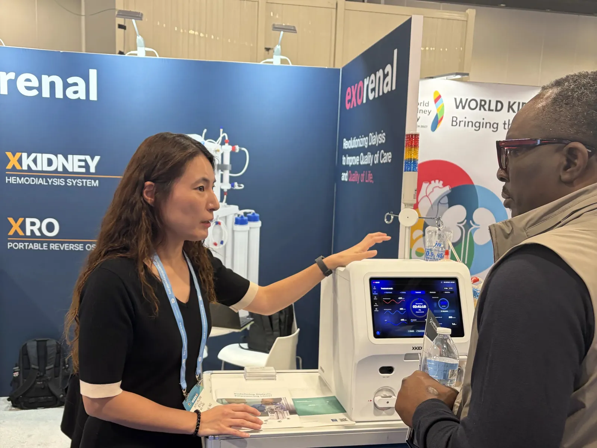
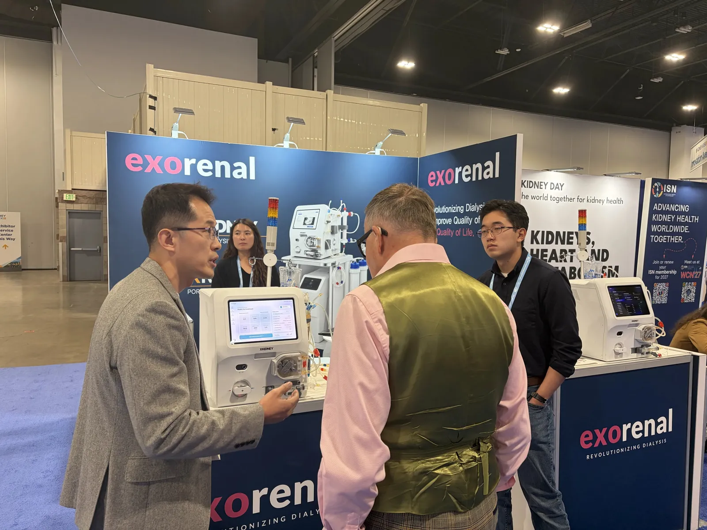
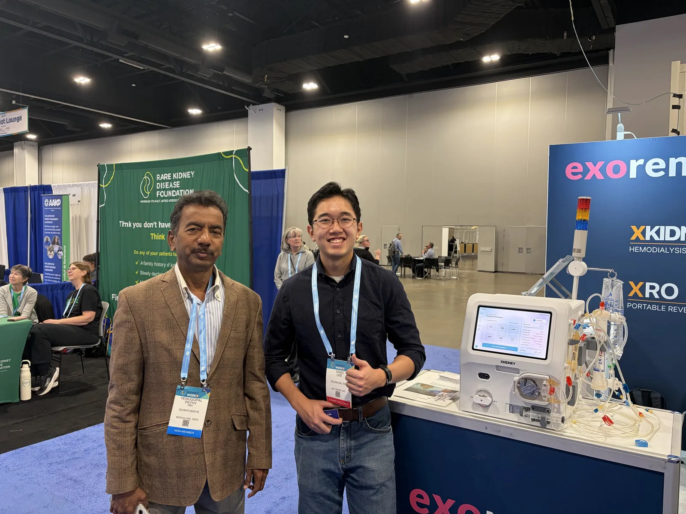
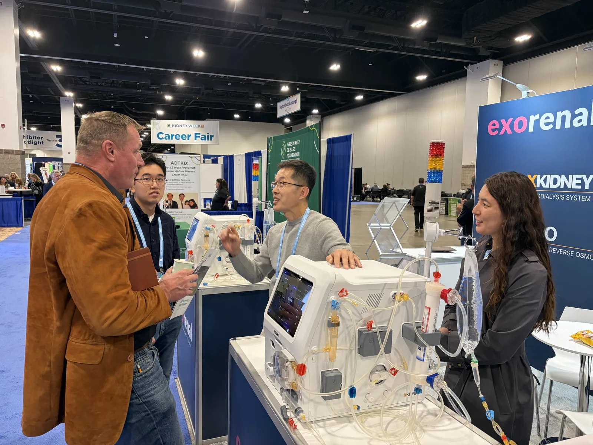
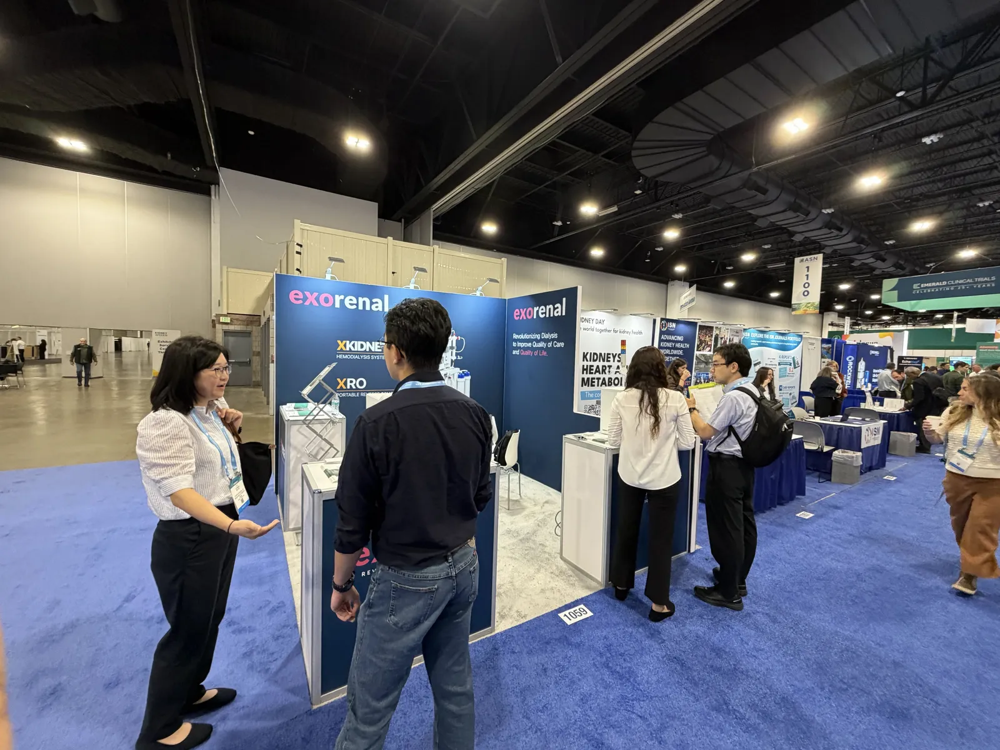

ASN Kidney Week 2026, Denver.
We showed XKIDNEY at the American Society of Nephrology's annual meeting in Denver.
- Exhibit hall
- Oct 22–24, 2026
- Venue
- Colorado Convention Center, Denver
- Booth
- #1059

Exorenal exhibited at ASN Kidney Week 2026, the American Society of Nephrology's annual meeting, held October 22–24 at the Colorado Convention Center in Denver. At booth #1059 we showed XKIDNEY, our 29 kg hemodialysis system.
Over three days, many visitors stopped by to see XKIDNEY up close and talk with our team. Thank you to everyone who came.
If you'd like a demo or a meeting, get in touch any time.
Look back: ASN Kidney Week 2024Photos from our San Diego booth





Where we were.
 exorenal · 1059
exorenal · 1059